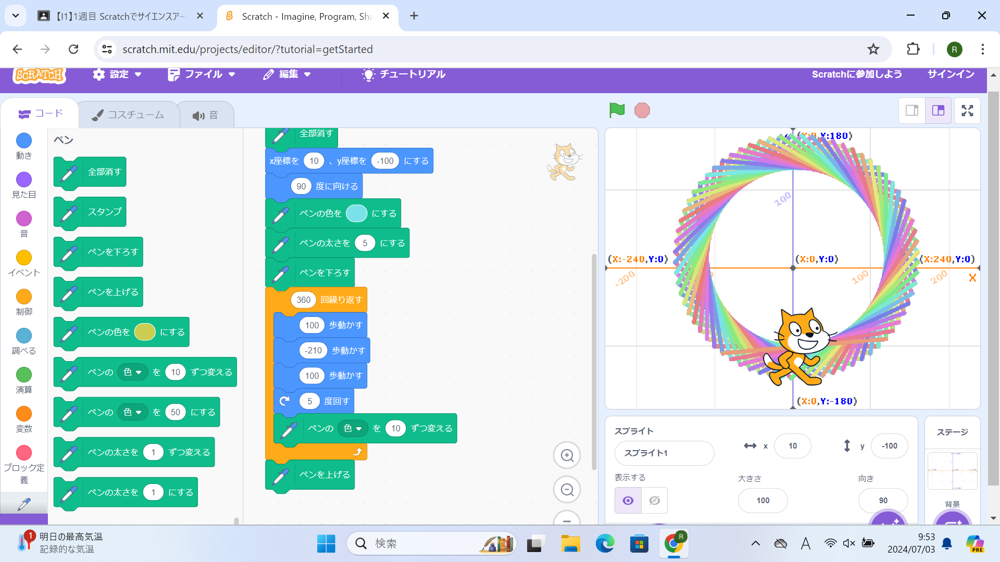
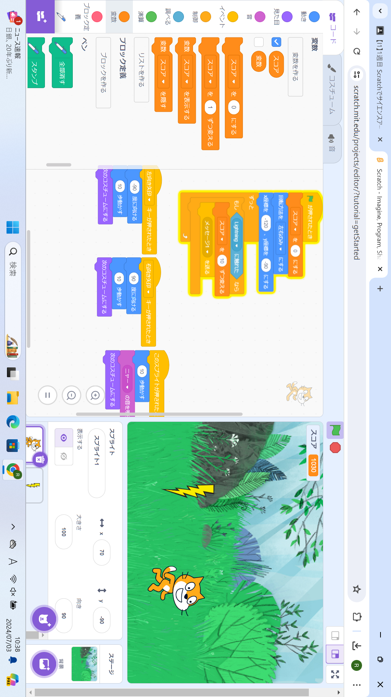

1週目のレポート ： 公大高専１年実習I-1
2a班07番 haruka225
第1週目
1-1 サイエンスアート

1.内容
スクラッチを使用し、コードを並べて、線画を描くプログラムを作成した。余った時間で、座標に入れる値を変えるなどして自由に線を描いた。
2.感想
まずは、プログラミングをすること自体が初めてだったのでとても楽しかったのと、達成感があった。今回の実習では、
先生が基本的なことからとても丁寧に説明してくださったので、苦手意識があった自分でも作成できた。しかし、次に自分で
プログラミングをする時は言われたことをこなしていくだけではなく、自分が思った通りに動くように考えて、座標の値を変えてみたり、
新しいコードなどももっと積極的に使えるようになりたいと考えた。暇な時間を見つけ、遊びながら少しでも学んできたいと思う。
1-2 ゲーム

1.内容
スクラッチを使用し、コードを並べて、猫がリンゴをキャッチするプログラムを作成した。リンゴが落ちる速度、得点をつける
プログラムを組んだ。背景やBGMなど工夫できるところが多かった。
2.感想
中学校の時に、パソコン部が発表していたプログラミングと同様だった。どのようなプログラミングなのか学べてとても
興味深かった。特にリンゴを落とす速度をランダムにすることが楽しかった。自分で作る場合は、もっと細かな設定を付け加えたり
することで、難易度の高低を定めてみたいと思う。
1-3 ホームページ作成
私のホームページ
1.内容
Githabを使用し、自分だけのホームページを作成した。あるサイトを自分のGithabにForkした。
2.感想
ホームページを作成する段階よりも前に、サインアップするのにとても時間が掛かった。サインアップして、
サイトを自分のGithabにForkしてみて思ったのは、内容を編集するのでさえ難しく感じていること。 これを解決するためには
日頃からもう少しパソコンに触れていかなければならないと思う。
各ページへのリンク
1週目のレポート
2週目のレポート
3週目のレポート
私のホームページ